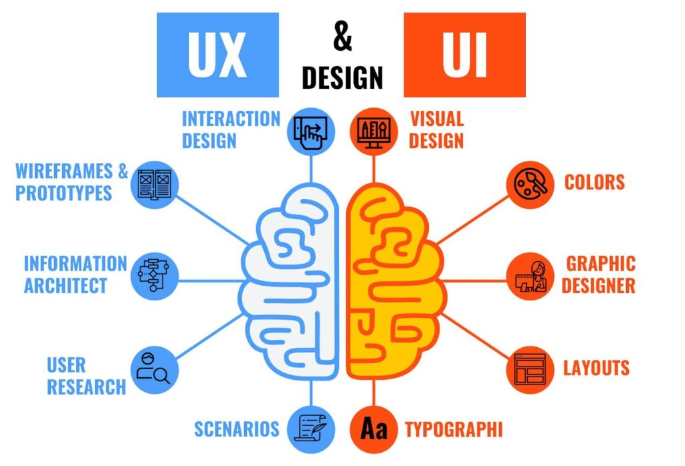

AI инженер
AI инженерите създават интелигентни системи, които се използват в приложения, чатботи и автоматизация. Те са ключови за развитието на технологиите.

Data Scientist
Тези специалисти анализират огромни количества данни и извличат полезна информация за бизнеса и обществото.

Киберсигурност
Защитават системи от хакери и кибератаки. С развитието на интернет нуждата от тях расте постоянно.
Инженерна роботика
Създават роботи за индустрията и медицината. Тази професия комбинира програмиране и инженерство.

Възобновяема енергия
Работят със зелени технологии като соларни панели и вятърни турбини за по-чиста планета.

UX/UI дизайнер
UX/UI дизайнерите създават удобни и красиви интерфейси за приложения и сайтове. Те анализират поведението на потребителите и подобряват тяхното преживяване. Тази професия е много търсена в дигиталния свят.